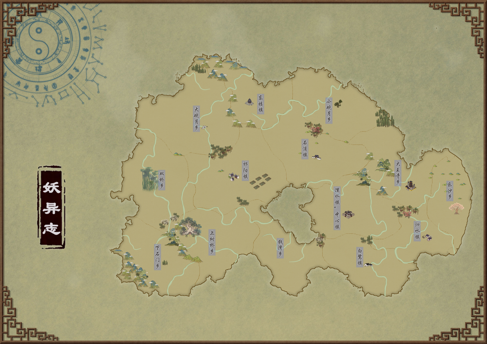

妖
妖怪者，盖精气之依物也。气乱于外，物变于外。万物得精气而有灵，先开智，后化人，万般锤炼可修成仙。
 第三盏灯回到灯前 ↗
第三盏灯回到灯前 ↗灯影世界 · 市井志怪
市井烟火
万物有灵
妖怪者，盖精气之依物也。气乱于外，物变于外。万物得精气而有灵，先开智，后化人，万般锤炼可修成仙。
鬼魂，众生必死，死必归土，此谓之鬼。万物死后，魂归地府，迷途者或滞留者则由鬼差带离。怨气深重者则有可能化作厉鬼躲过鬼差为祸人间。
以道立天下，其鬼不神；非其鬼不神，其神也不伤人。人有人间，妖鬼亦自成世界，一般来说各安其好，但也有一些精怪为了修行入人间历练，亦有恶妖食人、为祸一方。不过，此间有天道，人行天道而循天理，妖鬼不显、显之亦难伤人（有功德的人、正气足阳气旺的人，自身就对妖鬼有抗性）。尤其天下安定之时，世繁华处人气聚集，且常有能人奇士、神佛照看，不利于妖鬼修行施为，也因此除开一些特殊情况，即使妖鬼入世也不会长留于人群之中。
宣城，旧名濮水县，因盛产宣纸而得赐名。直埠州领下，三十余万人，六镇八乡、二百余村落。河流纵横，耕地广阔，民多富庶，亦多受文人墨客青睐。

濮水镇 · 朱雀街
掌管宣城政务。主官知县，辅以县丞、主簿，另有典史负责文书。下设巡检司、河伯所、税课司、铁冶所、驿站等，另设医学、阴阳学、僧网司、道纪司等杂职。
濮水镇 · 白虎街
负责宣城重要位置的治安，主官称巡检。中心巡检司位于白虎街，地方巡检司分布于各乡镇。
各地乡镇
由乡绅、族长等牵头推举，得到县衙认可，协助维护治安、修路架桥、排解纠纷。主吏称乡官，带领坊长、里老、里长、保正、甲首等。二百户为一里，五十户为一保，十户为一甲。
各地水系
征收渔税、漕运税，维护河流。主吏称河伯使，看管水库闸坝的小吏称闸官。
濮水镇 · 青龙街
祭祀孔子等先贤，也是宣城最大的县学所在。教谕多为回乡官员或大儒，内设贤哲祠、博文斋、尊经阁、寝楼等。石浦镇另有前朝留下的小文庙，其乡学亦设于此。
濮水镇 · 玄武街
祭祀城隍爷。每逢正月元宵、七月十五等大日子，官衙牵头祭祀，随后开展庙会，引来商贩游人。
各地乡村
又称德福庙。或考究精致，或只是简易牌位，村民相信土地可保一方平安、驱除魑魅魍魉、野狐孤鬼。
大王寺乡 · 秦山脚下
传闻已有千年，内有五大殿、三大阁和数座小祠小亭，藏有古迹孤品，乃直埠一绝景。据说求子求运灵验。
东楼镇 · 黔山山腰
据说由几代前战乱期的小国唐国建造，用以祈求五谷丰登、祭祀天地。后由太平道接手，立山门建道观，又称东仙祠。
双桥乡 · 鄯溪
有仙妖与凡人相恋的传说，每逢七夕花朝，男女上桥郊游求真心。左岸有月老庙，传说相爱之人求三生石，从桥上扔下便能白头到老；右侧商铺聚集，常有集会。
宣城各处
用于报时、传递警报和官方庆典。各地有多座钟楼、鼓楼，白鹭镇有最大的鼓楼。其滨水集市每月头尾在鼓楼下开市，季节更替还举行四神集会，庆季节神到来。
濮水镇
金银铺、古玩店、成衣铺俱全，成色、样式、价格皆上乘，稀罕物、奢侈品常在此最先引进。
白鹭镇
依漕运而兴的几条商街的合称。码头客栈、戏台乐坊、酒馆货栈、茶肆赌坊多不胜数，人声鼎沸，至夜不熄，又称常明路。
各地乡镇
每月头尾定时开市。村民早起赶集，售卖粮食布匹、采买日用品，多设于河边。
祁阳镇
宣城最大的工坊聚集地。由数家宣纸坊逐渐衍生织造坊、木坊，颜料坊、织布坊、机匠坊等迁聚于此。
钱湾乡北部
一手售卖珍珠水产的地方，采珠场、采珠户与渔家在此摆摊摆铺。来客或谈生意进大货，或赌运气捡漏。
乐沙乡南部
果酒闻名，酒坊酒馆众多。数十年前酒家联合街坊，以美酒佳肴、忘忧不归引来游人，遂得此名。
又称百花节、花神节。结伴踏青，剪彩纸挂枝头赏红，做花灯寄河放灯。少男少女也借此传递情思。
祭祀土地神的日子，各村有各自的祭祀方式。
又称鬼节、七月半。投食祭祀、诵经作法，举行普渡、施孤；官员领头祭祀城隍，祈求人间鬼界安定。
庆祝一年结束。节后陆续停工闭店，聚候新春，直到来年正月初五以后恢复劳作。
千文 · 一贯 · 一两银
路程随出发地、目的地、体力与途中停留而调整。